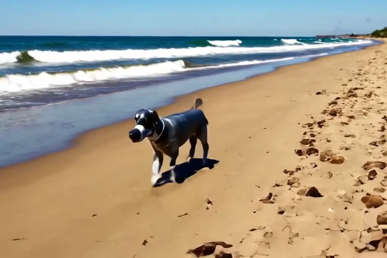
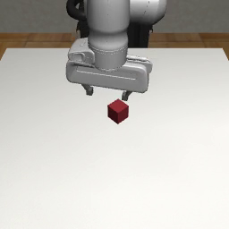
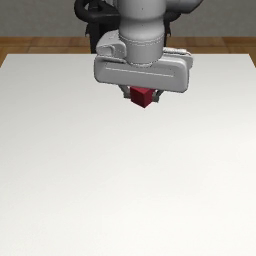

*Equal contribution
TLDR: When the condition changes, renoise the sample to strength \(s\) and denoise it under the new condition. One training-free primitive covers images, video, language and robots.
Renoise \(X\) to strength \(s\), then denoise it under the new condition \(c'\).
\(s = 0\) keeps \(X\), and \(s = 1\) regenerates.

dog → robot dog at \(s = 0.975\) LanguageLLaDA-8B This place really never disappoints!This place really needs some work. positive → negative at \(s = 0.6\) RoboticsDiffusion Policy

cube moved → lifted at \(s = 0.2\)ImagesFLUX.1-dev
39 edits, 3 seeds. An edit counts as applied when CLIP prefers \(c'\) over \(c\).
VideoLTX-Video
\(s = 0.909\), 15 edits, 3 seeds.
LanguageLLaDA-8B
Each token is masked with probability \(s\). 669 edits.
RoboticsDiffusion Policy
Lift, cube moved during a long open-loop plan, 50 episodes. On PushT all arms tie.